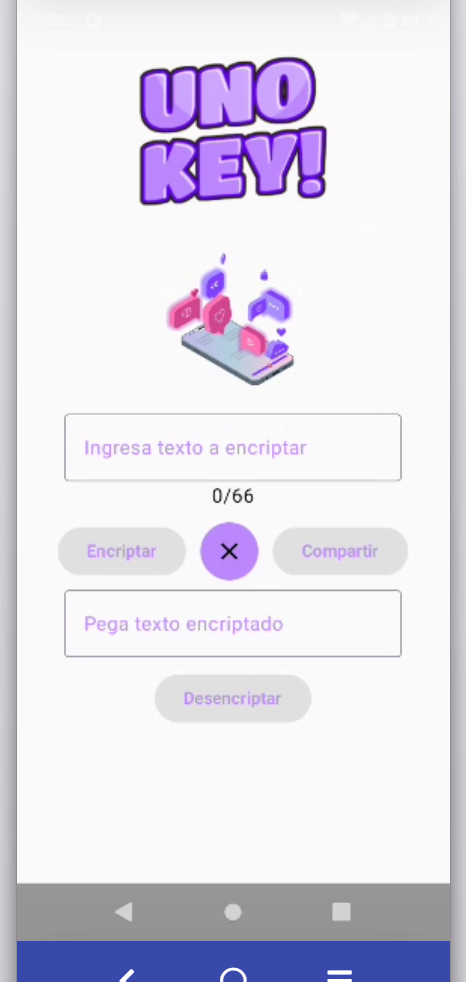
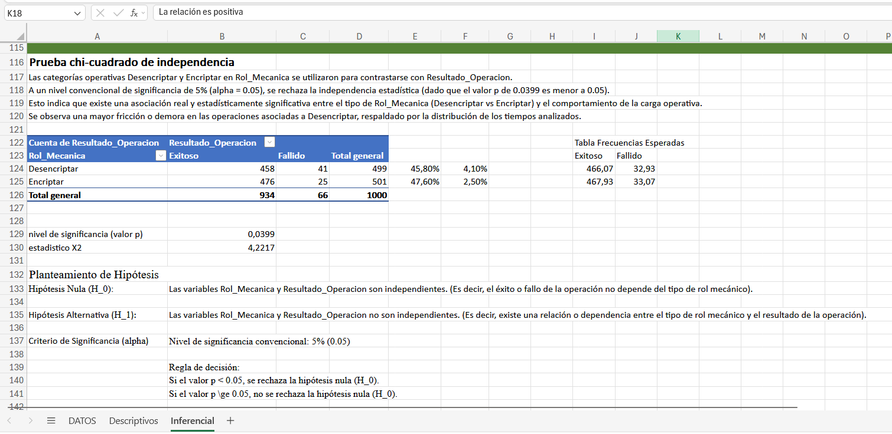
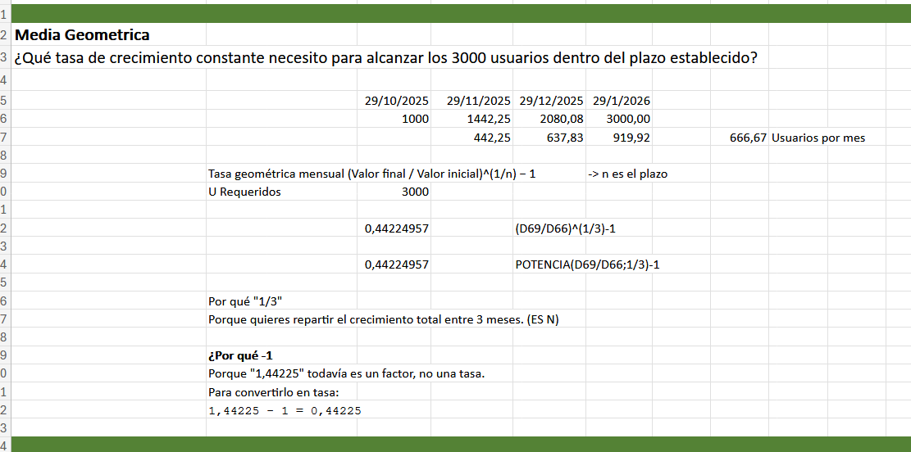
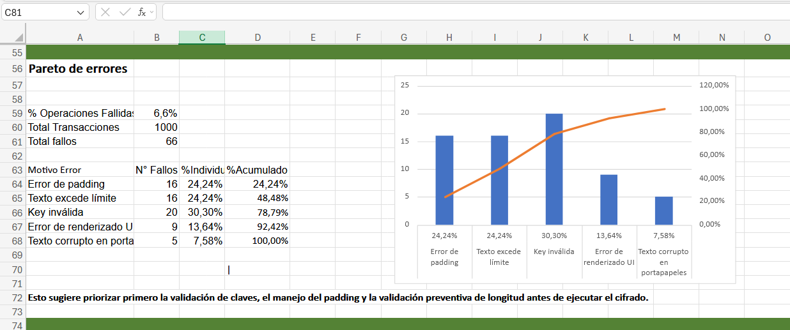
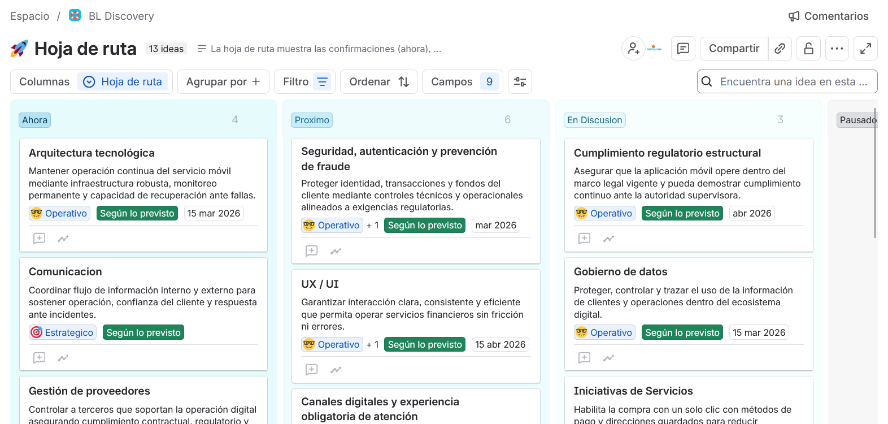
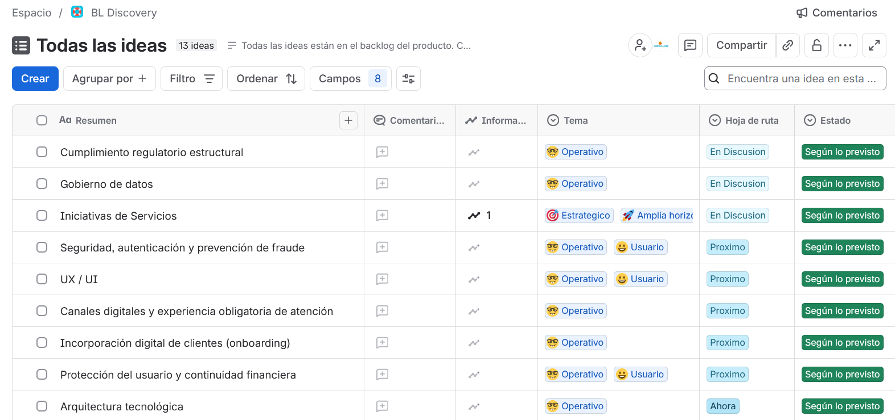
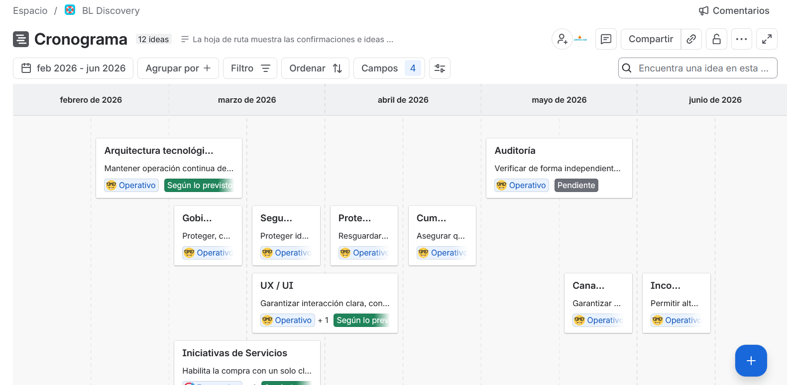

Aqui detallare proyectos que surgen de laboratorio, como empieza a tomar forma un MVP , desde hipotesis de negocio hasta desarrollo extremo, sin perder gestion o calidad.
Encriptacion y Desencriptacion de mensajes.
Proteccion de datos sensibles.
Compartir simple con quien quieras, sin perder privacidad.
Que pasa si observan o escuchan tus mensajes?
Prevenir
Quieres enviar tu numero de transaccion por un envio de dinero y alguien lo intercepta
o alguien simplemente lo ve.
Envia UNO KEY, el receptor lo vera solo al desencriptarlo.
Proteger
Quieres mantener tus secretos fuera del alcance de los curiosos? Envia UNO KEY, el mensaje se envia encriptado, inentendible, ultraseguro.

Simple
Escribes, encripta, comparte.
Copia, pega, desencripta.
Realmente necesitamos esto?
La hipótesis de negocio parte de la existencia de una necesidad de comunicación privada
y segura en un entorno donde personas y organizaciones intercambian información sensible
a través de plataformas digitales.
La propuesta consiste en desarrollar una aplicación
de mensajería cuyo principal elemento diferenciador sea la protección de las conversaciones
mediante cifrado, ofreciendo una alternativa centrada en la privacidad sin convertir la seguridad
en una barrera para el uso cotidiano.
El proyecto se plantea inicialmente mediante un MVP estimado
en tres meses, cuyo propósito será comprobar si existe una demanda real por este tipo de solución
y si los usuarios están dispuestos no solo a probarla, sino también a incorporarla de manera
habitual a sus comunicaciones.
La hipótesis central sostiene que, si la aplicación ofrece
una experiencia suficientemente simple, confiable y segura, será capaz de atraer usuarios,
generar adopción y establecer un comportamiento recurrente de comunicación.
El objetivo de esta primera etapa no es demostrar únicamente que la tecnología funciona,
sino comprobar que existe una oportunidad de negocio alrededor de ella.
Si el MVP demuestra una respuesta favorable del mercado, se plantea avanzar
hacia un MMP durante una segunda etapa de desarrollo, en la cual,
además de ampliar y perfeccionar el producto, se estudiará la viabilidad
de implementar un modelo de monetización basado en un cobro mínimo por mensaje.
Este mecanismo permitiría explorar si los usuarios perciben
suficiente valor en la privacidad y seguridad ofrecidas como
para aceptar un costo reducido asociado al uso del servicio,
manteniendo como premisa que el precio no debe convertirse en
una barrera significativa para la adopción.
De esta forma,
el MVP permitirá validar inicialmente la propuesta y reducir
la incertidumbre sobre su aceptación, mientras que el MMP
permitirá profundizar en su evolución, escalabilidad y
potencial de generación de ingresos.
La hipótesis de inversión
es que una solución de mensajería enfocada en privacidad puede
transformar una necesidad existente en una oportunidad empresarial
escalable, siempre que consiga combinar seguridad, facilidad de uso,
adopción sostenida y un modelo económico capaz de generar valor tanto
para los usuarios como para el negocio.
La ruta técnica establece los lineamientos para construir.
- Arquitectura y componentes.
- Requisitos funcionales y no funcionales .
- Diseño e implementación.
- APIs, datos e integraciones.
- Seguridad y calidad .
- Testing y validación.
La ruta Estadistica documenta los procedimientos y metodos.
- Definición de métricas y KPIs .
- Análisis de tendencias y comportamiento .
- Modelos predictivos y estimaciones .
- Analisis descriptivo e inferencial.
- Validación.
- Hipótesis e intervalos de confianza .
La ruta de Gestion.
- PMBOK: alcance, tiempo, costo, riesgos, calidad.
- Scrum: roles, eventos, backlog y sprints.
- Lean: eliminación de desperdicios y mejora continua.
- Jira: planificación, seguimiento y trazabilidad
- Gestión de recursos, prioridades y entregables.
- Gestión de riesgos y cambios .
La ruta técnica establece los lineamientos para construir.
- Arquitectura y componentes.
- Requisitos funcionales y no funcionales.
- Diseño e implementación.
- APIs, datos e integraciones.
- Seguridad y calidad.
- Testing y validación.
La ruta estadística documenta los procedimientos y métodos.
- Definición de métricas y KPIs.
- Análisis de tendencias y comportamiento.
- Modelos predictivos y estimaciones.
- Análisis descriptivo e inferencial.
- Validación.
- Hipótesis e intervalos de confianza.
La ruta de Gestión.
- PMBOK: alcance, tiempo, costo, riesgos, calidad.
- Scrum: roles, eventos, backlog y sprints.
- Lean: eliminación de desperdicios y mejora continua.
- Jira: planificación, seguimiento y trazabilidad.
- Gestión de recursos, prioridades y entregables.
- Gestión de riesgos y cambios.
Visualizaciones





